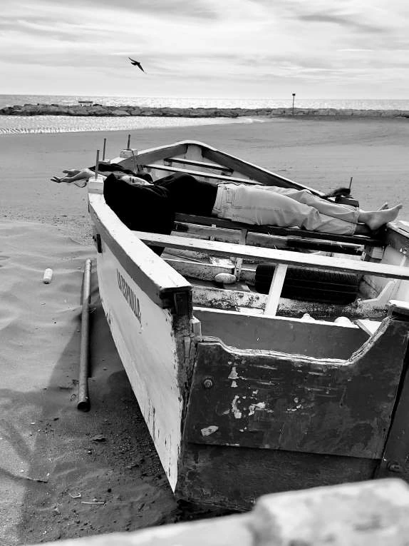
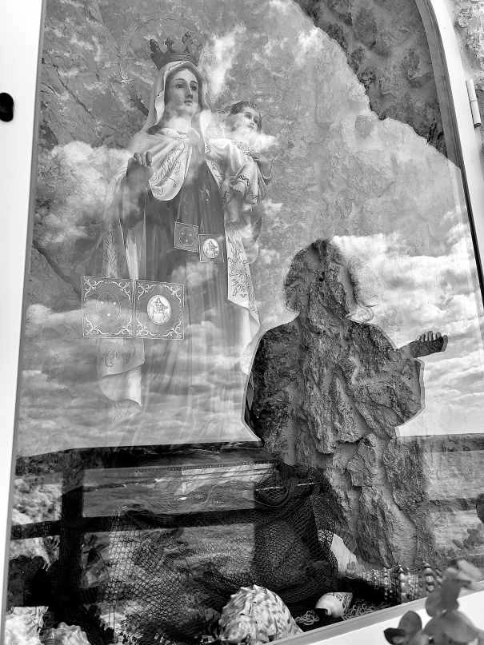
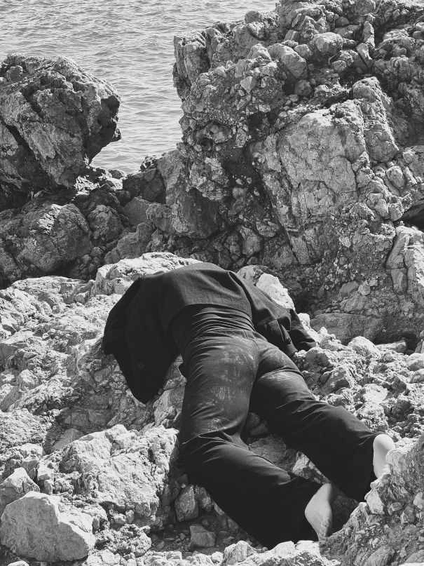
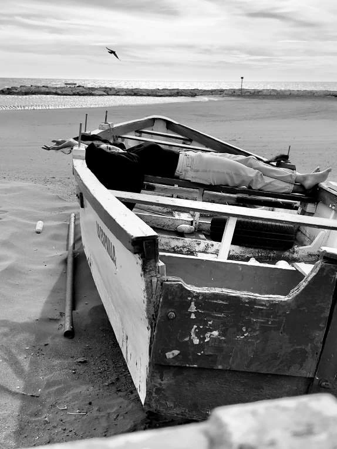
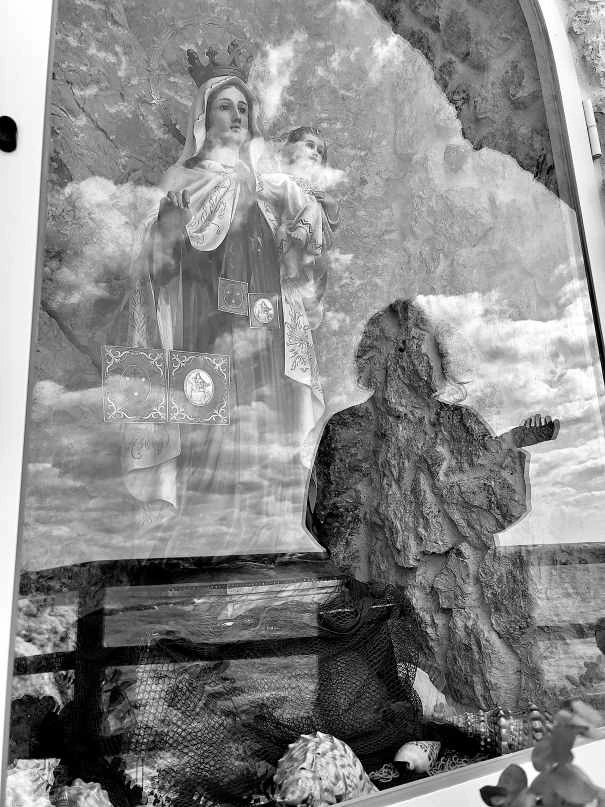
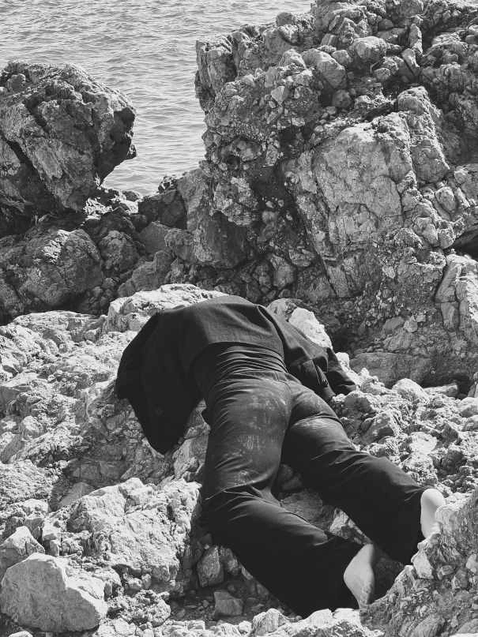
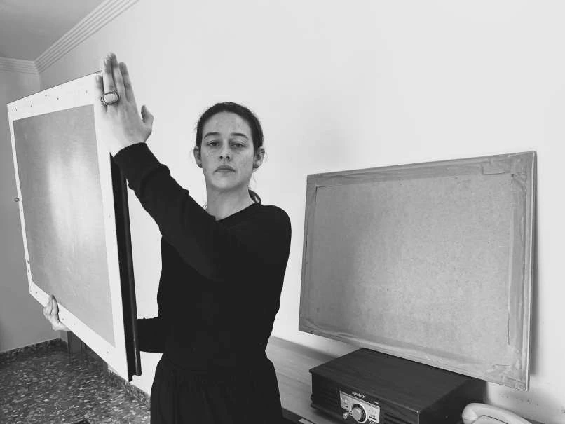
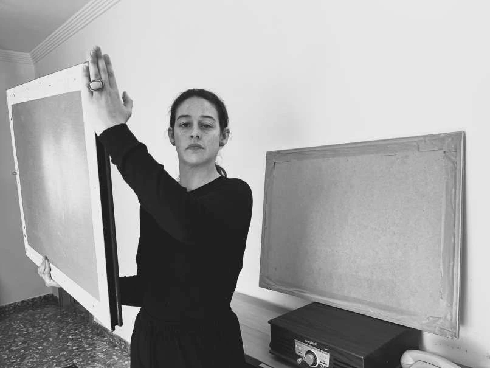

Adorando Amar
Un monólogo sobre Dora Maar
Escrito y dirigido por: Alba Berrocal
Fotografía: Reyes Cuesta
¿Adorando qué? Amar
¿Quién? Dora Maar
Dora Maar... ¿La fotógrafa, la artista, la amante que llora, la pintora, la surrealista católica, la de izquierdas, la que se sienta a la derecha, la de negro o la que dió en el blanco? Todas, ninguna. La única.
"Dorita, la fotógrafa, insoportable cantaora... y qué fea"
¿En París?
Sí, y en tu ciudad, aquí y allí.
"Mi destino es pese a lo que parezca, magnífico. Antes decía que mi destino era, pese a lo que pareciera, muy duro." - Dora Maar
 





 
